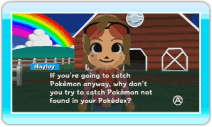
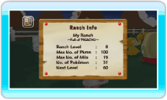

16 |
Using the Bulletin Board System (BBS) |
 |

● Pokémon Wanted Here you can see which Pokémon Hayley has specifically requested you to bring to the Ranch. This occurs once you deposit Pokémon from Pokémon Diamond or Pokémon Pearl to the Ranch for the first time. A Pokémon Wanted request has a time limit and it will be removed after a certain period.
The Pokémon in Pokémon Wanted are mostly ones which you haven't yet caught or traded in Pokémon Diamond or Pokémon Pearl (based on Pokédex information). When you complete the Pokémon Wanted by catching the requested Wanted Pokémon and bringing it to the Ranch, a new Pokémon Wanted will begin. By completing the Pokémon Wanted request, you can move closer to completing your Pokédex. Use this feature to complete the National Pokédex!
Point at a Pokémon on the Pokémon Wanted screen and press Note: The first time you deposit Pokémon to the Ranch, there won't be a record of Pokémon Wanted achievements. From the second time onwards, your achievements will be recorded.
Additionally, once you complete a Pokémon Wanted, you can point at the arrow on the bottom of the screen and press
When you deposit a Wanted Pokémon to the Ranch, Hayley will often ask you to trade a Pokémon with her. The Pokémon you trade with Hayley will appear as Hayley's Pokémon on the Ranch. Additionally, the Pokémon you get from Hayley by trading can be withdrawn, however, the Pokémon you gave to Hayley cannot be withdrawn to your Pokémon Diamond or Pokémon Pearl Game Card. 
● Ranch Info Here you can check your Ranch's level, the number of Pokémon you have and the maximum number of Miis you can bring to your Ranch. |
 to check how to catch the Wanted Pokémon or what conditions are needed to catch them. If Hayley requested several Pokémon at once, point at the green arrow and press
to check how to catch the Wanted Pokémon or what conditions are needed to catch them. If Hayley requested several Pokémon at once, point at the green arrow and press  |
 |
 |